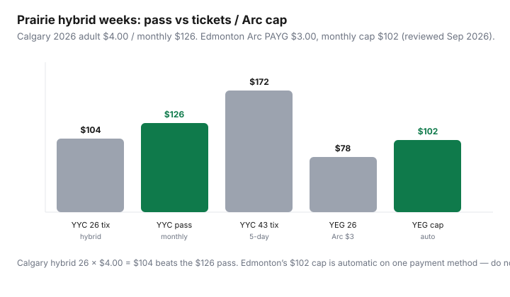

Transportation · Canada
How Calgary and Edmonton riders can pick monthly pass vs tickets for hybrid work
National transit explainers stop at PRESTO and Compass. Calgary and Edmonton riders still overbuy monthlies on hybrid weeks — they just get less press. Calgary Transit in 2026 is a classic ticket versus monthly shop (adult single $4.00, monthly $126). Edmonton ETS on Arc is a capping city: $3.00 pay-as-you-go, $10.50 daily cap, $102 monthly cap if you keep one payment method. Same hybrid-work problem, two different machines.
Use the universal calculator with the numbers below. This is not Toronto, and it is not a U.S. light-rail blog.
Key takeaways
- Calgary 2026 adult: cash/ticket $4.00 (10-pack $40), day pass $12.65, monthly $126. Break-even $126 ÷ $4.00 = 31.5 trips.
- Hybrid 3-day Calgary: ≈26 trips × $4.00 = $104 — buy tickets, not the monthly. Five-day ≈43 trips = $172 vs $126 — buy the pass.
- Edmonton Arc adult: PAYG $3.00 (90 min), daily cap $10.50, monthly cap $102 (34 trips). Cash/Arc ticket $3.75. The cap is automatic — do not also buy a paper monthly out of habit.
- U-Pass and employer products win when they are already in your fees. Low-income Calgary Fair Entry bands and Edmonton low-income annuals change the denominator — apply before you do adult math.
- Prairie winter reliability is a reason to keep riding, not a reason to pre-buy a monthly you will not fill. Pair a pass you actually use with the occasional car-share for −30°C errands.
Calgary Transit MyFare / pass options overview
City of Calgary fare table for 2026 (council increase from 2025; news page 6 Dec 2025, fares page reviewed Sep 2026):
| Product | Adult (18+) | Youth (13–17) |
|---|---|---|
| Single (cash or ticket) | $4.00 | $2.65 |
| 10 tickets | $40.00 | $26.50 |
| Day pass | $12.65 | $9.25 |
| Monthly | $126.00 | $86.00; $92.00 from Sep 2026 |
| Weekend family/group | $18.00 | |
My Fare (mobile) sells singles, day passes, and monthlies. A monthly needs a myID account. Purchase window: from the 15th of the previous month through the 14th of the valid month. Activate on first ride that calendar month. After the 14th you can only buy next month — which is how people get stuck on tickets mid-month (fine) or panic-buy next month early (not fine). CTrain machines sell singles and day passes; validate paper tickets before you enter the paid zone. Children 12 and under ride free.
Low-income monthly via Fair Entry (2026): Band A $6.30, Band B $44.10, Band C $63.00. Senior annual $169; low-income senior annual $34. If you qualify, adult $126 math is the wrong sheet.
ETS Arc card and Edmonton fare products
Edmonton’s adult table (edmonton.ca/ets/fares-passes, reviewed Sep 2026; airport row notes rates as of 1 Feb 2026):
- Arc / credit / debit PAYG (90 min): $3.00
- Daily fare cap: $10.50
- Monthly fare cap: $102 on the same payment method
- Arc ticket 90 min or cash: $3.75 (does not help the cap the way the card does — prefer Arc stored or open-loop you will reuse)
- Senior Arc monthly cap: $36; senior annual cap $396 on ETS routes
- Route 747 airport: $6 cash or Arc ticket/tap one way; $108 airport monthly cap — not the city $102
Paper ETS tickets were in a wind-down (exchange unused singles at the Edmonton Service Centre into 31 Mar 2026 per City copy). New riders should start on Arc. Concession fare types need the myArc.ca account updated so the tap is not adult $3.00 by mistake.
Regional Arc travel (St. Albert, Strathcona, etc.) uses other fare rates. Confirm the regional table before you assume the $102 ETS cap covers a Fort Saskatchewan commute.
Hybrid office break-even examples

| Pattern | Trips | Calgary $ | Edmonton $ |
|---|---|---|---|
| 2-day hybrid | ≈17 | $68 tickets (pass loses) | $51 (under cap) |
| 3-day hybrid | ≈26 | $104 vs $126 | $78 vs $102 cap |
| 5-day office | ≈43 | $172 vs $126 pass | Hits $102 cap |
| 5-day + weekends | 50+ | Pass clearly | Still $102 if one card |
Calgary day pass $12.65 beats a fourth adult tap the same day ($16). It is not a commuter product. Edmonton’s $10.50 daily cap is 3.5 PAYG taps — useful on a downtown-plus-errand Saturday; still counts toward the $102 month.
U-Pass and employer products
Calgary and Edmonton post-secondaries (University of Calgary, SAIT, MRU, University of Alberta, NAIT, MacEwan, and others) typically bundle a U-Pass into fees. Check the institution transportation page — My Fare can display a U-Pass once you are eligible. If U-Pass is already paid, do not buy an adult monthly on top. Employer EcoPasses / payroll transit in Calgary still exist in some downtown buildings; ask HR before you Autoload $126. Edmonton employers sometimes load Arc. A prepaid employer product is the cheapest “pass vs tickets” answer: take it.
Winter reliability: when a pass still wins even with WFH
January in Calgary or Edmonton is not a reason to buy a monthly you will ride eight times. It is a reason to have a fare ready so you are not driving a cold Civic because the ticket app failed. Practical winter rules:
- If you already five-day commute, the monthly (Calgary) or the cap (Edmonton) is doing its job on snow days — you would have paid singles anyway.
- If you hybrid 2–3 days, keep tickets / Arc PAYG. A blizzard week that adds two extra office days still may not hit 32 Calgary trips.
- Load My Fare or Arc before −25°C mornings. Dead phones are how people pay cash $3.75 in Edmonton and fall off the cap.
- CTrain and LRT reliability is a service issue. A pass does not make a cancelled train cheaper; it only removes the per-tap sting if you are already over break-even.
Combining transit with occasional car-share for errands
Prairie cities are car-default. The save is often “one less household car,” not “zero cars.” Keep the winter-beater for the mountains or the cabin; put the second commute on Calgary Transit or ETS. For Costco runs and IKEA, price one car-share or a household trip-chain against a second insurance policy — see car-share vs owning and TCO. Do not buy an adult monthly “so I never need the car on Saturdays” if Saturdays are the only days you ride. Buy a day pass (Calgary $12.65) or ride Arc to the daily cap (Edmonton $10.50) on those days.
Decision after two real months: log paid trips. Calgary under ~30 adult taps — tickets. Over 35 most months — monthly. Edmonton — tap one Arc or one credit card and ignore the folklore about paper monthlies. Recheck after the next council fare vote.
Sources & date stamps
- Calgary Transit, “Fares changing for 2026” (6 Dec 2025) and Fares & Passes page — adult $4.00 / $40 tickets / $126 monthly; youth monthly $92 from Sep 2026; Fair Entry bands.
- Calgary Transit My Fare — myID for monthlies; buy 15th–14th; activate in the calendar month.
- City of Edmonton, Transit fares (edmonton.ca/ets/fares-passes), reviewed Sep 2026 — Arc $3.00, daily $10.50, monthly $102; cash $3.75; senior and airport notes.
Frequently asked questions
When does a Calgary monthly pass beat tickets?
Adult 2026 monthly is $126 and a ticket is $4.00, so break-even is 31.5 paid trips. Hybrid 3-day weeks (about 26 trips, $104) should stay on tickets. Five-day commuters usually buy the pass.
Does Edmonton still sell a monthly pass?
Adults should use Arc pay-as-you-go. The monthly ceiling is an automatic $102 fare cap on one payment method (34 trips at $3.00). Cash and some tickets are $3.75 and are the wrong habit if you want the cap.
What is My Fare in Calgary?
The official mobile app for singles, day passes, and monthlies. Monthlies need a myID account and are sold from the 15th of the previous month through the 14th of the valid month.
Do U-Pass students need an adult monthly?
No. If your institution already charges a U-Pass, that is your product. Adding an adult Calgary monthly or ignoring Arc concessions is how students double-pay.
Should winter make me buy a pass “just in case”?
Only if you already ride past break-even. Winter is a reason to keep the app loaded and a backup ticket, not a reason to prepay $126 for eight taps.